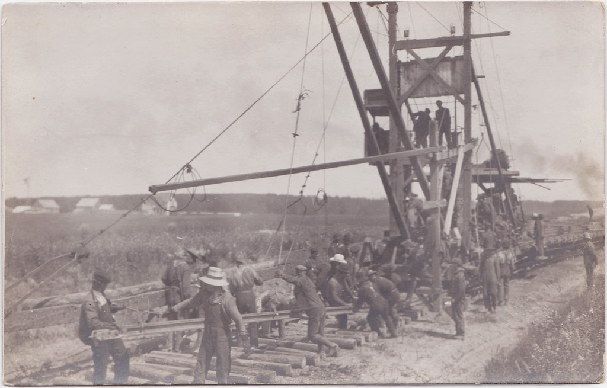

THE PEOPLE WHO BUILT THE INTERNET


THE SALESMEN
Meet the entrepreneurs who identified and successfully established new uses for the Internet.
Meet the entrepreneurs who identified and successfully established new uses for the Internet.